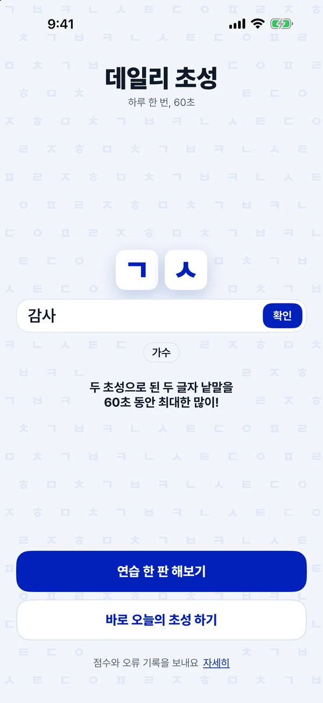
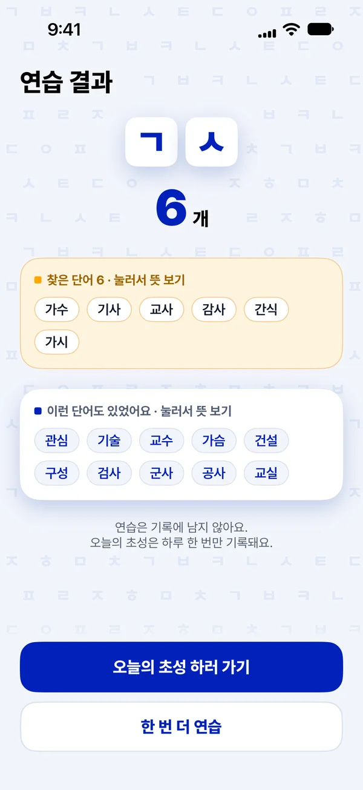

iPhone app · Server · Personal projectTestFlight beta
Infinity Chosung
An iPhone word game. You get two Korean initial consonants and 60 seconds to type two-syllable nouns that match them. When a round ends you see the words you entered and the ones you missed, then start the next round right away. It also works without an internet connection.
- Swift · SwiftUI
- Java 21
- Spring Boot
- PostgreSQL
- Docker
- 54,349words with definitions
- V1–V4Flyway schema versions
- 60 sper round


Highlights
- A round's submission is stored once using a SHA-256 key
- Without internet, results are kept on the device and sent later
How it works
- Round
The word list ships inside the app, so a round can be played without internet. Game rules live in a separate Swift package that is tested without a simulator.
- Queue
Results that could not be sent are kept in a file on the device and sent once a connection is available.
- Submission
The server builds a SHA-256 key from the result's contents. The same contents arriving again are accepted as they are; different contents for the same round are rejected with a 409.
- Storage
A Spring Boot 4 and Java 21 server stores results in PostgreSQL, with the schema managed by Flyway. Requests are limited by a token bucket per client.
In TestFlight beta and not yet on the App Store.